Hexo中Buttefly主题Valine评论系统配置以及美化（七）
Valine系统的设置
原文链接：Hexo中Buttefly主题Valine评论系统配置以及美化（七） | 偷掉月亮 (moonshuo.cn)
大家好，我是阿硕，专注与后端，略懂前端的一个菜鸟程序猿，今天教大家Hexo中valine评论的设置。
介绍
之所以选择valine是因为操作简单，而且页面的变化的美化我们都可以进行配置，简单功能比较强大，而且快速安全，不要后端
更改配置
1 |
comments: |
Valine使用
基础配置
如果你的域名备案了，建议选择国内的节点，这样我们操作比较方便，但是如果没有备案，我们选择国际版- 创建 Valine 应用，名称任意
- 进入对应的应用，点击
设置 -> 应用 凭证，获取AppID和AppKey` - 在butterfly应用中进行相关的配置
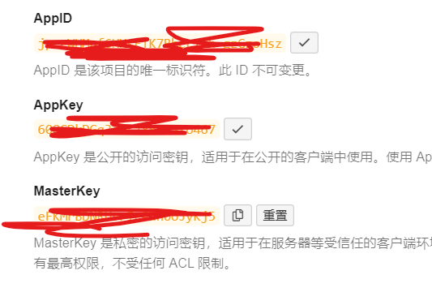
1 |
# valine |
如果大家想要更多的配置信息，那么打开下面的网站进行查看介绍 介绍 | Valine 一款快速、简洁且高效的无后端评论系统。
现在我们重新构建系统，进行评论尝试
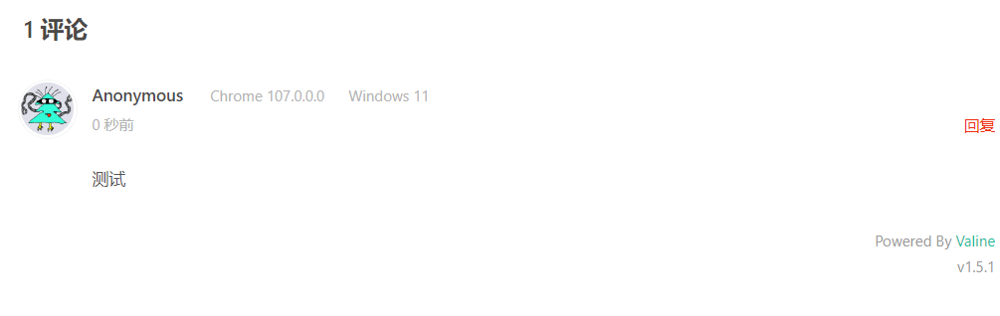
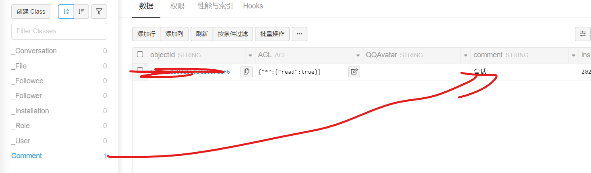
绑定域名邮件通知
云引擎—-设置—-访问域名
这里绑定我们的二级域名，我设置的是valine开头
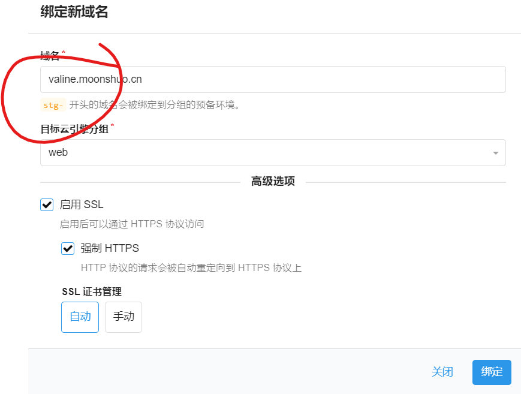
到我们的域名DNS解析器中进行解析，等待解析结束，显示成功的信息， 这里由于博主已经将域名备案，所以会首先检查备案信息，而如果选择的国际版，是不需要验证备案信息的，这个时间可能比较长，现在我们继续下一步
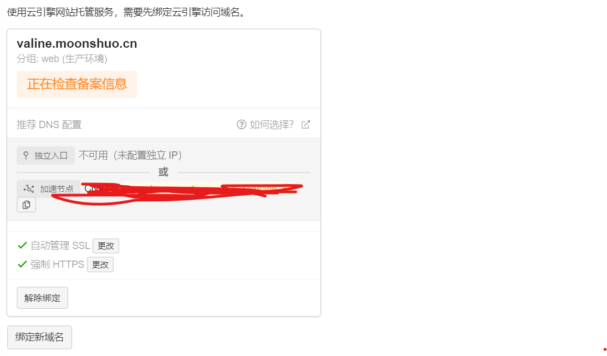
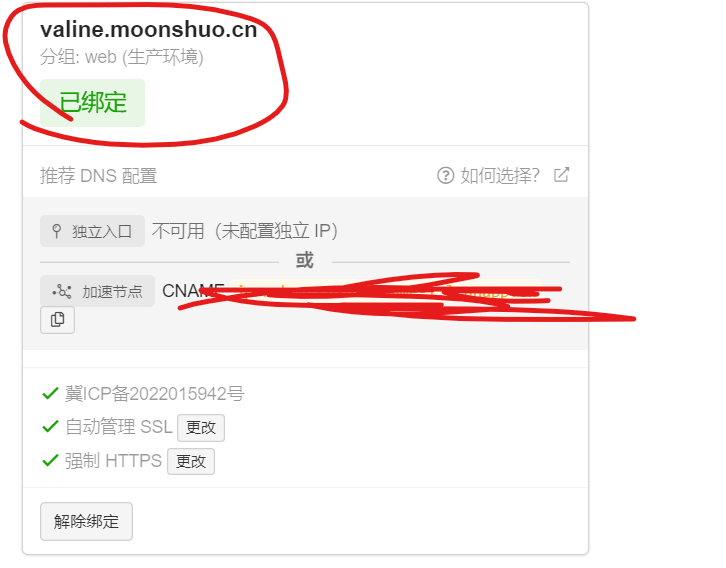
自定义环境变量
云引擎-->设置-->添加自定义环境变量
| 变量名称 | 示例 | 说明 |
|---|---|---|
| SITE_NAME | MAIFY美菲 | 网站名称 |
| SITE_URL | moonshuo.cn | 网站地址 |
| SMTP_USER | zss200101@qq.com | 邮箱名称 |
| SMTP_PASS | 123456789 | 邮箱SMTP验证码，可以自行搜索如何获取，后续会使用到 |
| SMTP_SERVICE | 邮箱的服务商，便于邮件消息的分发 | |
| SENDER_NAME | MAIFY美菲 | 寄件人的名称，我们后续发送短息的时候的名称 |
| TEMPLATE_NAME | rainbow | 设置提醒邮件的主题（邮件的主题，美化的时候会说到） |
| ADMIN_URL | （注意要与你上面的绑定域名相同，我这里备案了，所以可以进行自定义） | 后台管理的地址，管理评论，同时用于唤醒服务器 |
部署
云引擎–>部署–>部署项目–>Git部署–>配置Git–>填写下方地址–>保存–>生产环境–>部署
1 |
https://github.com/DesertsP/Valine-Admin.git |
注意在我们部署的时候，选择的分支，旧的项目的是master，而GitHub新的位main，如果帮你使用别的系统，注意分支的名字
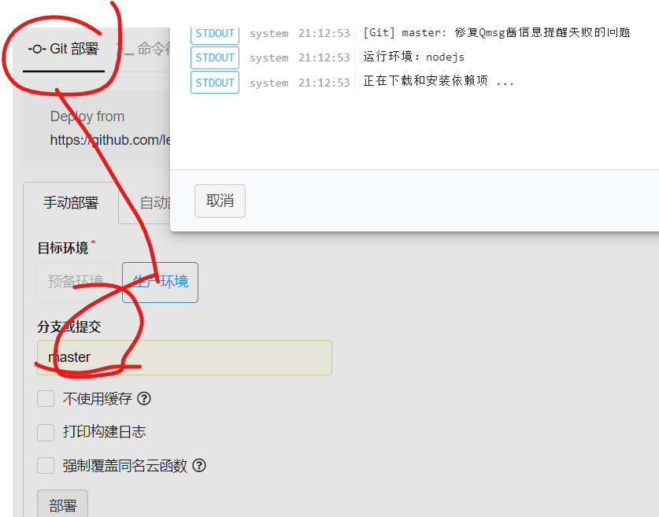
解决服务器休眠问题
由于我们选择的是免费的服务，默认是晚间关闭的，但是我们需要定时唤醒服务，以继续我们的评论的支撑
找到定时任务—创建定时任务
- 定时检查24小时内漏发的邮件通知，生产环境选择
resend_mails选择0 59 7 * * *，表示每天早 8 点检查过去 24 小时内漏发的通知邮件并补发 - 选择 self-wake 云函数，Cron 表达式为
0 0/20 7-23 * * ?，表示每天早 7 点到晚 23:59 点每隔 20 分钟访问云引擎，ADMIN_URL环境变量务必设置正确
测试
大家注意在测试的时候要注意我们的云引擎是否处于休眠状态，如果处于休眠状态，那么我们的评论是不会发送的
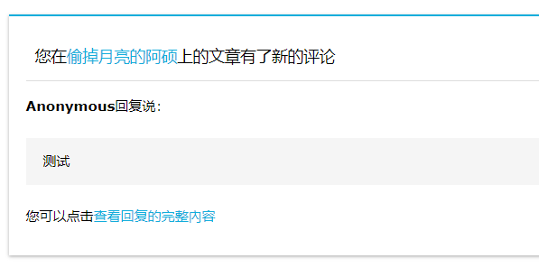
设置安全域名
安全域名是限制那些网站可以是引用我们的评论的，虽然一般情况下不会泄露，但是这里设置上还是比较安全
设置—>安全中心—>web安全域名
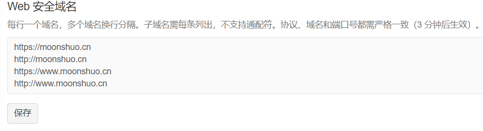
评论系统的登录
上述布置完成之后，我们的整体已经完成了，但是我们想要更好的管理我们的评论，那么现在我们需要开启后台管理系统
首先打开我们的设置的二级域名，比如博主的就是https://valine.moonshuo.cn，也就是我们刚刚在设置的时候的域名，那么现在登录密码是什么，现在我们打开https://绑定的域名/sign-up进行注册，注册完毕即可登录
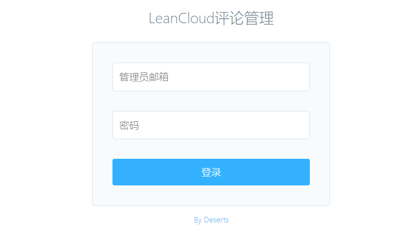
有点简陋😀
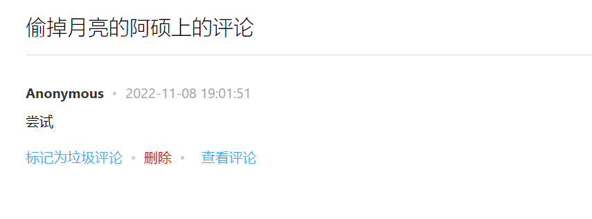
评论界面的美化
现在的美化基于valine1.5.1
基础
现在我们使用的valine评论用的是原作者发布在网络上的，而我们无法直接对源码进行更改，所以我们需要下载下来进行相关配置，那么现在我们进行下载，下面以谷歌浏览器为例子
鼠标右击，点击检查找到网络，打开这个网址，我们会发现进入到了一个js页面，右键另存为到/js文件夹中
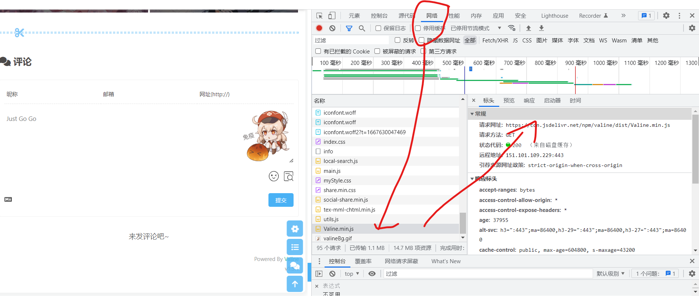
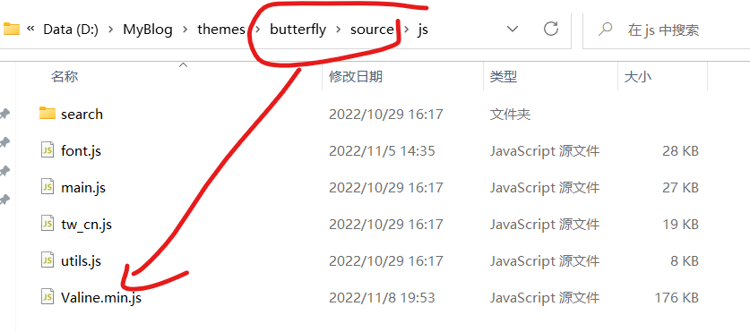
现在进入到butterfly配置文件，搜索option，找到valine，这个时候我们发现这个js文件已经是我们自己的文件了，而且还可以享受到我们自己的cdn加速效果，也不用担心原来的链接挂掉
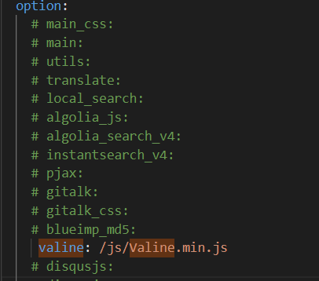
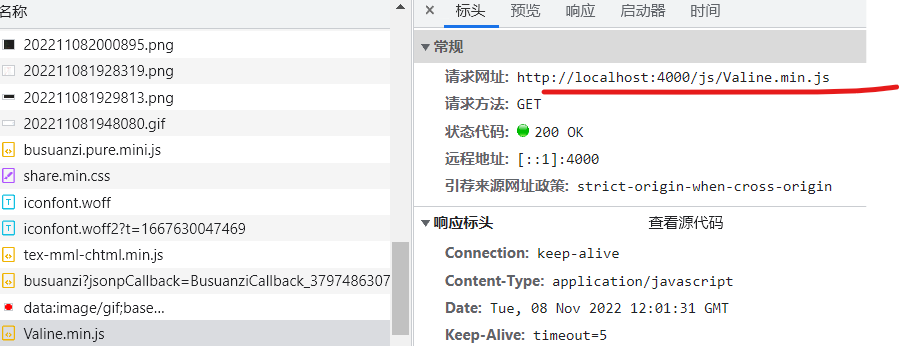
添加背景图片
有的小伙伴可能会问不是配置中可以直接添加吗？？？但是比较奇怪的是博主这里出现了兼容性错误，所以放弃那个更改在这里进行添加
现在我们定义一个myStyle.css放在下面的目录中
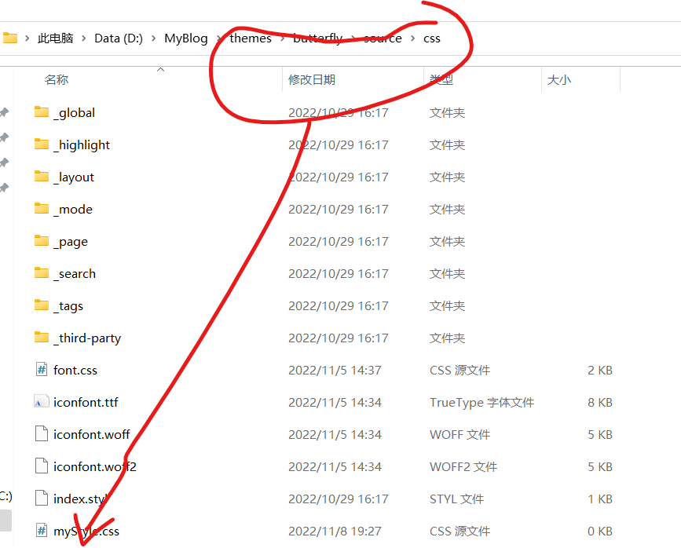
现在我们在主题文件中引入这个文件
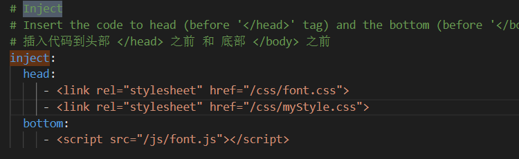
在css中写入下面的代码，这里作者的图片放到了css同级目录下的img下，大家也可以直接放超链接,建议大家放动图，这样有感觉吧
1 |
#veditor { |
效果
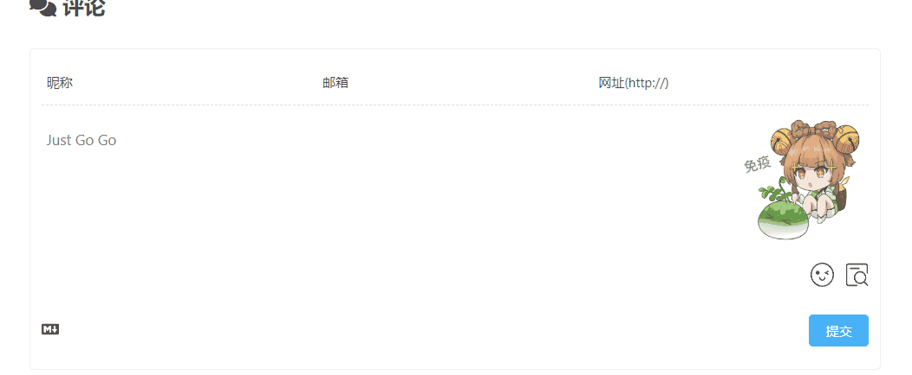
下面的这一行代码，当鼠标聚焦的时候，背景图消失，大家可以选择使用
1 |
#veditor:focus{ |
增加博主小伙伴标识
而现在的这个功能需要我们使用魔改的valine文件，那么还是原来的办法，打开下列的网址，替换原来的js文件
https://cdn.jsdelivr.net/gh/HCLonely/Valine@latest/dist/Valine.min.js
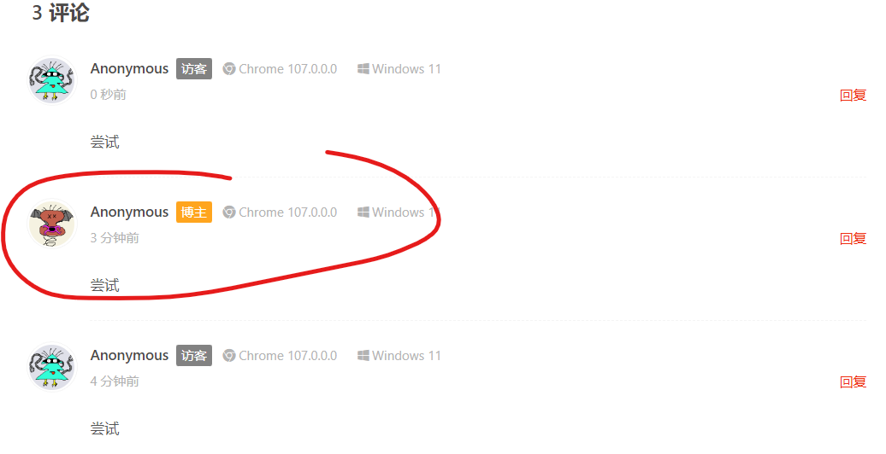
打开下面的路径
…\themes\butterfly\layout\includes\third-party\comments\valine.pug,在里面更改如下的代码
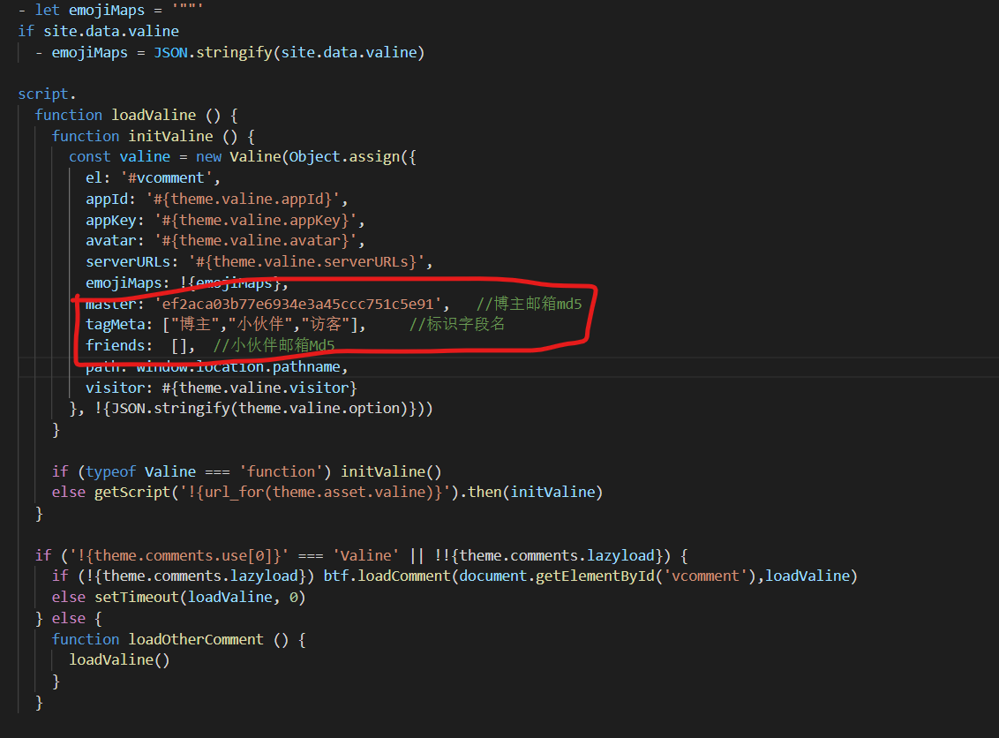
1 |
master: 'ef2aca03b77e6934e3a45ccc751c5e91', //博主邮箱md5加密32位小写 |
Leancloud流控问题解决
此问题尚未解决，等待后续更新今早上起来尝试一下评论，发现失效了，邮件功能不能正常的使用，查询了一下原因发现是因为同一时间执行的人数太多，而导致服务器唤醒失败，那么我们应该如何解决？？
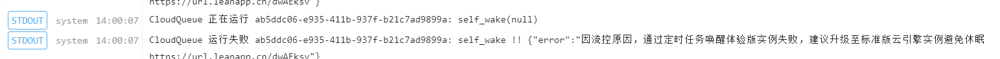
在这里参考了这位博主的文章优雅解决LeanCloud流控问题 - 腾讯云开发者社区-腾讯云 (tencent.com)
设置Token
登录github—setting—developer settings
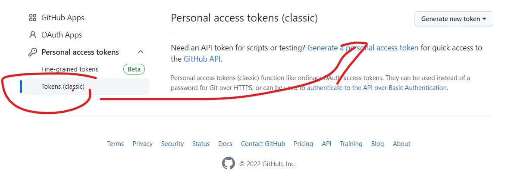
名称设置为GITHUB_TOKEN，然后选择repo , admin:repo_hook , workflow这些选项，最终完成token
建立仓库
新建一个仓库，名称必须为GITHUB_TOKEN
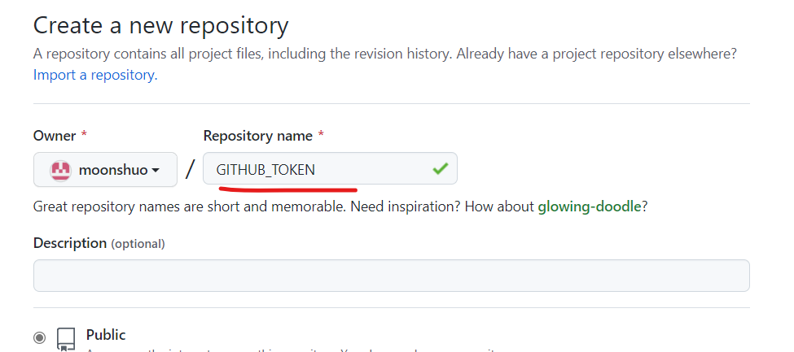
接下来我们fork以下项目的代码
https://github.com/AimTao/leancloud-self-wake
完毕之后，我们设置设置你的 评论后台网站的地址，并开启 Github Action
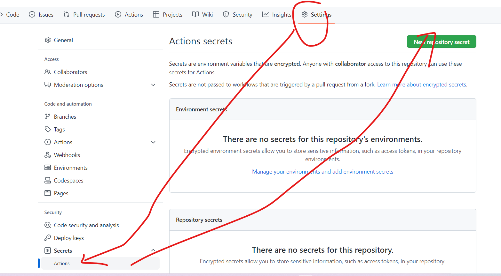
而下面是你的valine管理地址
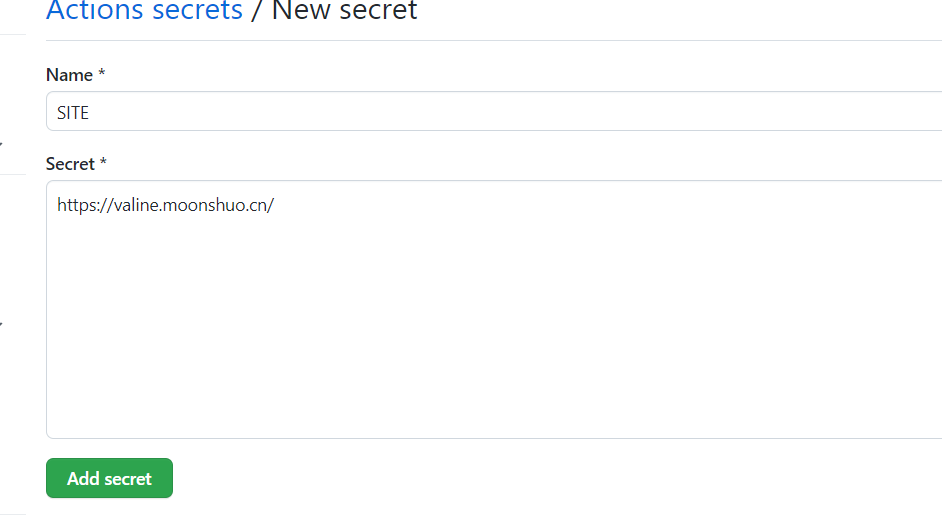
点击Action，如果是第一次点击I Under….，然后点击以下自己的右上角的star，首先手动触发一次
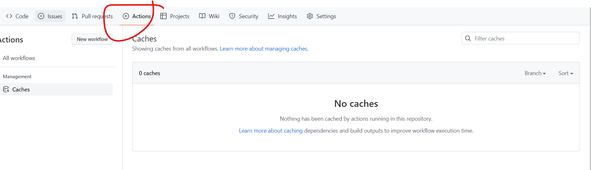
结语
在美化的过程中参考了许多大佬的代码，忘了记录了下来，这里说明一下，然后还有很多关于butterfly中valine的设置，比如每日一言，等等操作，鉴于访问速度的影响，这里就不再进行阐述，大家如果需要在评论区提醒一下，后续会在出教程
还有一部分美化由于技术有线或者版本冲突问题，暂时没有写出来，我会等到解决在更新教程的，谢谢大家！！！